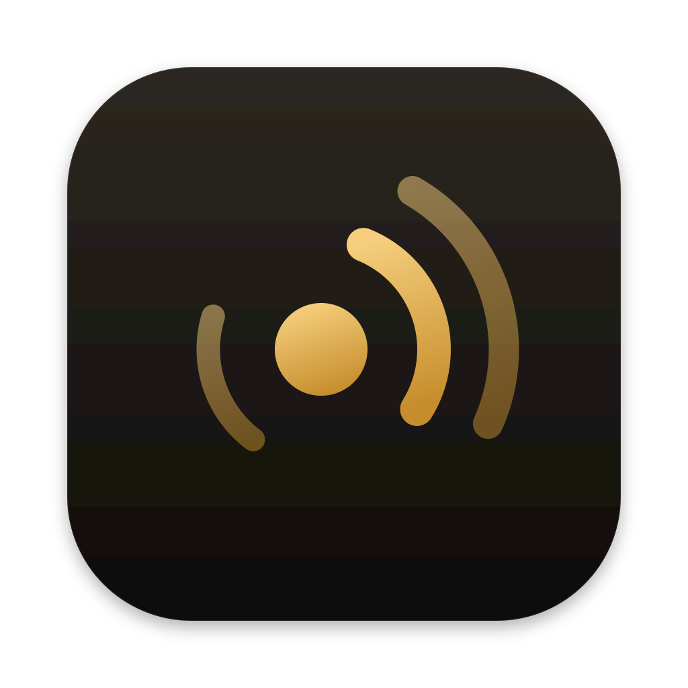

<!doctype html>
<html lang="en">
<head>
<meta charset="utf-8">
<title>Auvel P1 screens</title>
<style>
/* Auvel P1 high-fidelity screens. 402 x 874 pt (iPhone 16 Pro). Inter stands in for SF Pro; inline SVG stands in for SF Symbols. */
* { box-sizing:border-box; }
body { margin:0; padding:28px; background:#d9d9de; font-family:Inter, system-ui, sans-serif; }
.grid { display:flex; flex-wrap:wrap; gap:28px; align-items:flex-start; }
.cap { font:500 13px Inter; color:#333; margin-top:8px; width:402px; }
.capm { width:auto; max-width:560px; }

.light { --bg:#ffffff; --grouped:#f2f2f7; --cell:#ffffff; --canvas:#fbfaf7; --label:#000; --label2:rgba(60,60,67,.6); --label3:rgba(60,60,67,.3);
  --fill:rgba(120,120,128,.12); --fill2:rgba(120,120,128,.2); --track:rgba(120,120,128,.2); --sep:rgba(60,60,67,.29);
  --gold:#B7801F; --goldText:#94661A; --red:#FF3B30; --orange:#FF9500; --green:#34C759; --blue:#007AFF; --sheet:#f2f2f7; --disc:#fff; --kb:#d1d3d9; --key:#fff;
  --mbar:rgba(246,246,246,.9); --menu:rgba(240,240,240,.97); --win:#ececec; --winbody:#ffffff; --mctl:#fff; --macsel:#0a64d6; }
.dark { --bg:#000; --grouped:#000; --cell:#1c1c1e; --canvas:#0b0b0c; --label:#fff; --label2:rgba(235,235,245,.6); --label3:rgba(235,235,245,.3);
  --fill:rgba(118,118,128,.24); --fill2:rgba(118,118,128,.36); --track:rgba(118,118,128,.32); --sep:rgba(84,84,88,.65);
  --gold:#E3AC48; --goldText:#E3AC48; --red:#FF453A; --orange:#FF9F0A; --green:#30D158; --blue:#0A84FF; --sheet:#1c1c1e; --disc:#1c1c1e; --kb:#2b2b2d; --key:#6b6b6e;
  --mbar:rgba(30,30,30,.85); --menu:rgba(40,40,42,.97); --win:#2b2b2d; --winbody:#1e1e1f; --mctl:#3a3a3c; --macsel:#0a64d6; }

/* iPhone */
.phone { width:402px; height:874px; border-radius:56px; position:relative; overflow:hidden; background:var(--bg); color:var(--label); box-shadow:0 0 0 2px #000; }
.phone.canvas { background:var(--canvas); }
.phone.grouped { background:var(--grouped); }
.island { position:absolute; top:11px; left:50%; transform:translateX(-50%); width:124px; height:36px; border-radius:20px; background:#000; z-index:20; }
.status { height:54px; display:flex; justify-content:space-between; align-items:center; padding:16px 34px 0 46px; font-weight:600; font-size:17px; position:relative; z-index:10; }
.status .r { display:flex; gap:6px; align-items:center; }
.home { position:absolute; bottom:8px; left:50%; transform:translateX(-50%); width:140px; height:5px; border-radius:3px; background:var(--label); z-index:30; }
.sym { fill:currentColor; display:inline-block; vertical-align:middle; flex:none; }
.navbar { height:52px; display:flex; align-items:center; justify-content:space-between; padding:0 20px; font-size:17px; }
.navbar .t { font-weight:600; }
.navbar .a { color:var(--blue); min-width:60px; }
.navbar .a.r { text-align:right; font-weight:600; }
.chip { display:inline-flex; align-items:center; gap:8px; height:44px; padding:0 16px 0 12px; border-radius:22px; font-size:17px; font-weight:600; background:var(--fill); }
.iconbtn { width:44px; height:44px; border-radius:22px; display:flex; align-items:center; justify-content:center; background:var(--fill); }
.lt { font-size:34px; font-weight:700; letter-spacing:.2px; line-height:41px; }
.body { font-size:17px; line-height:22px; }
.sub { font-size:15px; line-height:20px; color:var(--label2); }
.foot { font-size:13px; line-height:18px; color:var(--label2); }
.btn { height:50px; border-radius:25px; display:flex; align-items:center; justify-content:center; font-size:17px; font-weight:600; }
.btn.pri { background:var(--label); color:var(--bg); }
.btn.sec { background:var(--fill); color:var(--label); }
.btn.gold { background:var(--gold); color:#fff; }
.dark .btn.gold { color:#1A1204; }
.list { background:var(--cell); border-radius:12px; overflow:hidden; margin:0 20px; }
.cell { min-height:52px; display:flex; align-items:center; gap:14px; padding:10px 16px; font-size:17px; position:relative; }
.cell + .cell::before { content:""; position:absolute; top:0; right:0; left:56px; height:.5px; background:var(--sep); }
.cell.noicon + .cell.noicon::before { left:16px; }
.cell .r { margin-left:auto; color:var(--label2); display:flex; align-items:center; gap:6px; font-size:17px; }
.sh { font-size:13px; color:var(--label2); text-transform:uppercase; margin:22px 36px 7px; }
.sf { font-size:13px; color:var(--label2); margin:7px 36px 0; line-height:18px; }
.toggle { width:51px; height:31px; border-radius:16px; background:var(--green); position:relative; }
.toggle::after { content:""; position:absolute; right:2px; top:2px; width:27px; height:27px; border-radius:50%; background:#fff; box-shadow:0 2px 4px rgba(0,0,0,.2); }
.toggle.off { background:var(--fill2); } .toggle.off::after { right:auto; left:2px; }
.dot { width:8px; height:8px; border-radius:4px; display:inline-block; }
.sheetw { position:absolute; left:0; right:0; bottom:0; background:var(--sheet); border-radius:38px 38px 0 0; padding-top:6px; z-index:15; }
.dark .sheetw { background:#1c1c1e; } .dark .sheetw .list { background:#2c2c2e; }
.light .sheetw.grp { background:#f2f2f7; }
.grabber { width:36px; height:5px; border-radius:3px; background:var(--label3); margin:0 auto 4px; }
.dim { position:absolute; inset:0; background:rgba(0,0,0,.35); z-index:12; }
.codebox { display:flex; gap:8px; justify-content:center; }
.codebox div { width:46px; height:58px; border-radius:12px; background:var(--cell); display:flex; align-items:center; justify-content:center; font-size:28px; font-weight:600; font-variant-numeric:tabular-nums; border:2px solid transparent; }
.dark .codebox div { background:#2c2c2e; }
.codebox .gap { width:10px; background:none !important; }
.codebox .cur { border-color:var(--blue); }
.codebox.err div:not(.gap) { border-color:var(--red); }
.kb { position:absolute; left:0; right:0; bottom:0; height:292px; background:var(--kb); padding:8px 6px 0; display:grid; grid-template-columns:repeat(3,1fr); grid-auto-rows:46px; gap:7px; z-index:16; }
.kb div { background:var(--key); border-radius:7px; display:flex; flex-direction:column; align-items:center; justify-content:center; font-size:25px; box-shadow:0 1px 0 rgba(0,0,0,.3); }
.kb div small { font-size:9px; letter-spacing:2px; font-weight:600; margin-top:-3px; }
.kb .e { background:none; box-shadow:none; }
.banner { margin:0 20px; padding:14px 16px; border-radius:16px; background:var(--cell); display:flex; gap:12px; align-items:flex-start; }
.canvas .banner { background:var(--fill); }
.banner .t { font-size:15px; font-weight:600; line-height:20px; }
.banner .d { font-size:13px; color:var(--label2); line-height:18px; margin-top:2px; }
.banner .act { font-size:15px; font-weight:600; color:var(--blue); margin-top:8px; }
.vo { position:absolute; border:3px solid #000; border-radius:12px; box-shadow:0 0 0 2px #fff; z-index:40; }
.volab { position:absolute; z-index:41; background:#1d1d1f; color:#fff; font-size:11px; line-height:14px; padding:5px 7px; border-radius:6px; max-width:200px; }

/* Remote (Dial) */
.vol { position:absolute; top:136px; left:0; right:0; text-align:center; }
.vol .n { font-size:64px; font-weight:300; letter-spacing:-2px; line-height:72px; font-variant-numeric:tabular-nums; }
.vol .c { font-size:12px; font-weight:600; letter-spacing:1.5px; color:var(--label2); }
.dialw { position:absolute; left:36px; top:287px; width:330px; height:330px; }
.disc { position:absolute; left:61px; top:61px; width:208px; height:208px; border-radius:50%; background:var(--disc); display:flex; align-items:center; justify-content:center; box-shadow:0 10px 30px rgba(0,0,0,.10), inset 0 0 0 .5px var(--sep); }
.dark .disc { box-shadow:inset 0 0 0 1px #2c2c2e; }
.row3 { position:absolute; left:0; right:0; bottom:64px; display:flex; justify-content:center; gap:28px; }
.rb { width:72px; height:72px; border-radius:36px; background:var(--fill); display:flex; align-items:center; justify-content:center; }
.stateslot { position:absolute; left:0; right:0; top:636px; }
.off { opacity:.3; }

/* Mac */
.desk { width:620px; height:470px; border-radius:12px; position:relative; overflow:hidden; box-shadow:0 0 0 1px rgba(0,0,0,.4); }
.light.desk { background:linear-gradient(160deg,#c9d6e8,#e9dcc9); }
.dark.desk { background:linear-gradient(160deg,#1b2433,#2b2219); }
.mbar { height:28px; background:var(--mbar); display:flex; align-items:center; gap:16px; padding:0 14px; font-size:13px; color:var(--label); backdrop-filter:blur(20px); }
.mbar .sp { flex:1; }
.mbar .on { background:var(--fill2); border-radius:5px; padding:2px 6px; display:flex; align-items:center; }
.menu { position:absolute; top:33px; width:286px; background:var(--menu); border-radius:10px; padding:5px; font-size:13px; color:var(--label); box-shadow:0 0 0 .5px rgba(0,0,0,.35), 0 10px 30px rgba(0,0,0,.25); }
.mi { height:24px; display:flex; align-items:center; gap:8px; padding:0 9px; border-radius:5px; }
.mi .r { margin-left:auto; color:var(--label2); }
.mi.sel { background:var(--macsel); color:#fff; } .mi.sel .r { color:rgba(255,255,255,.8); }
.mi.dis { color:var(--label3); }
.mh { font-size:11px; font-weight:600; color:var(--label2); padding:4px 9px 2px; }
.ms { height:1px; background:var(--sep); margin:5px 9px; }
.win { position:absolute; left:50%; transform:translateX(-50%); width:500px; background:var(--winbody); border-radius:12px; overflow:hidden; box-shadow:0 0 0 .5px rgba(0,0,0,.4), 0 20px 50px rgba(0,0,0,.35); color:var(--label); }
.tbar { height:30px; display:flex; align-items:center; gap:8px; padding:0 12px; background:var(--winbody); }
.tl { width:12px; height:12px; border-radius:50%; }
.wb { padding:6px 28px 24px; font-size:13px; line-height:18px; }
.mb { display:inline-flex; height:24px; padding:0 12px; align-items:center; border-radius:6px; font-size:13px; background:var(--mctl); box-shadow:0 0 0 .5px rgba(0,0,0,.25), 0 1px 1px rgba(0,0,0,.1); }
.mb.def { background:var(--macsel); color:#fff; box-shadow:none; }
.step { display:flex; gap:10px; align-items:flex-start; margin:8px 0; }
.num { width:20px; height:20px; border-radius:10px; background:var(--fill2); display:flex; align-items:center; justify-content:center; font-size:11px; font-weight:700; flex:none; }
.num.ok { background:var(--green); color:#fff; }
</style>
</head>
<body>
<svg width="0" height="0" style="position:absolute"><defs>
  <symbol id="playpause" viewBox="0 0 40 28"><path d="M2 3.5 Q2 1.6 3.7 2.6 L19 12.2 Q20.6 13.3 19 14.3 L3.7 23.9 Q2 24.9 2 23 Z"/><rect x="24" y="3" width="5" height="21" rx="1.6"/><rect x="33" y="3" width="5" height="21" rx="1.6"/></symbol>
  <symbol id="fwd" viewBox="0 0 34 24"><path d="M2 4 Q2 2.3 3.5 3.2 L15 10.6 Q16.4 11.6 15 12.6 L3.5 20 Q2 21 2 19.3 Z M17 4 Q17 2.3 18.5 3.2 L30 10.6 Q31.4 11.6 30 12.6 L18.5 20 Q17 21 17 19.3 Z"/></symbol>
  <symbol id="back" viewBox="0 0 34 24"><g transform="translate(34,0) scale(-1,1)"><path d="M2 4 Q2 2.3 3.5 3.2 L15 10.6 Q16.4 11.6 15 12.6 L3.5 20 Q2 21 2 19.3 Z M17 4 Q17 2.3 18.5 3.2 L30 10.6 Q31.4 11.6 30 12.6 L18.5 20 Q17 21 17 19.3 Z"/></g></symbol>
  <symbol id="spk" viewBox="0 0 32 26"><path d="M2 9 Q2 8 3 8 H8 L14.5 2.6 Q16 1.6 16 3.4 V22.6 Q16 24.4 14.5 23.4 L8 18 H3 Q2 18 2 17 Z"/><path d="M20.5 8.5 Q23 13 20.5 17.5 M24.5 5 Q29 13 24.5 21" fill="none" stroke="currentColor" stroke-width="2.4" stroke-linecap="round"/></symbol>
  <symbol id="spkslash" viewBox="0 0 32 26"><path d="M2 9 Q2 8 3 8 H8 L14.5 2.6 Q16 1.6 16 3.4 V22.6 Q16 24.4 14.5 23.4 L8 18 H3 Q2 18 2 17 Z"/><path d="M20 8 L29 18 M29 8 L20 18" fill="none" stroke="currentColor" stroke-width="2.6" stroke-linecap="round"/></symbol>
  <symbol id="spkbang" viewBox="0 0 32 26"><path d="M2 9 Q2 8 3 8 H8 L14.5 2.6 Q16 1.6 16 3.4 V22.6 Q16 24.4 14.5 23.4 L8 18 H3 Q2 18 2 17 Z"/><circle cx="25" cy="13" r="7"/><path d="M25 9 V14 M25 16.6 V17" stroke="#fff" stroke-width="2.2" stroke-linecap="round"/></symbol>
  <symbol id="laptop" viewBox="0 0 30 22"><rect x="5" y="2" width="20" height="14" rx="2" fill="none" stroke="currentColor" stroke-width="2.2"/><path d="M1.5 19.5 H28.5" stroke="currentColor" stroke-width="2.4" stroke-linecap="round"/></symbol>
  <symbol id="desktop" viewBox="0 0 30 26"><rect x="2" y="2" width="26" height="17" rx="2.5" fill="none" stroke="currentColor" stroke-width="2.2"/><path d="M11 24 H19 M15 19 V24" stroke="currentColor" stroke-width="2.4" stroke-linecap="round"/></symbol>
  <symbol id="macmini" viewBox="0 0 30 22"><rect x="2" y="7" width="26" height="9" rx="2.5" fill="none" stroke="currentColor" stroke-width="2.2"/></symbol>
  <symbol id="chev" viewBox="0 0 14 10"><path d="M2 2.5 L7 7.5 L12 2.5" fill="none" stroke="currentColor" stroke-width="2.2" stroke-linecap="round" stroke-linejoin="round"/></symbol>
  <symbol id="chevr" viewBox="0 0 10 16"><path d="M2.5 2 L8 8 L2.5 14" fill="none" stroke="currentColor" stroke-width="2.2" stroke-linecap="round" stroke-linejoin="round"/></symbol>
  <symbol id="gear" viewBox="0 0 24 24"><path fill-rule="evenodd" d="M10.3 1.8h3.4l.5 2.6a8 8 0 0 1 1.9.8l2.2-1.5 2.4 2.4-1.5 2.2c.35.6.6 1.2.8 1.9l2.6.5v3.4l-2.6.5a8 8 0 0 1-.8 1.9l1.5 2.2-2.4 2.4-2.2-1.5a8 8 0 0 1-1.9.8l-.5 2.6h-3.4l-.5-2.6a8 8 0 0 1-1.9-.8l-2.2 1.5-2.4-2.4 1.5-2.2a8 8 0 0 1-.8-1.9l-2.6-.5v-3.4l2.6-.5c.2-.7.45-1.3.8-1.9L3.3 6.1l2.4-2.4 2.2 1.5c.6-.35 1.2-.6 1.9-.8zM12 8.4a3.6 3.6 0 1 0 0 7.2 3.6 3.6 0 0 0 0-7.2z"/></symbol>
  <symbol id="moon" viewBox="0 0 24 24"><path d="M15.5 2.5 A9.8 9.8 0 1 0 21.5 17.8 A8.2 8.2 0 0 1 15.5 2.5 Z"/></symbol>
  <symbol id="wifix" viewBox="0 0 30 24"><path d="M2.5 9 Q12 0 21.5 9 M6.5 13 Q12 8 17.5 13 M10.5 17 Q12 15.6 13.5 17" fill="none" stroke="currentColor" stroke-width="2.4" stroke-linecap="round"/><path d="M26 4 V14 M26 18.5 V19" stroke="currentColor" stroke-width="2.8" stroke-linecap="round"/></symbol>
  <symbol id="hand" viewBox="0 0 24 26"><path d="M7 12 V5 Q7 3.5 8.5 3.5 Q10 3.5 10 5 V11 V3.5 Q10 2 11.5 2 Q13 2 13 3.5 V11 V4.5 Q13 3 14.5 3 Q16 3 16 4.5 V12 V7.5 Q16 6 17.5 6 Q19 6 19 7.5 V16 Q19 24 12 24 Q7.5 24 5.5 20 L2.6 14.2 Q2 12.8 3.2 12.2 Q4.4 11.6 5.3 12.7 L7 15 Z"/></symbol>
  <symbol id="netslash" viewBox="0 0 26 26"><circle cx="13" cy="13" r="10.5" fill="none" stroke="currentColor" stroke-width="2"/><path d="M2.5 13 H23.5 M13 2.5 Q7.5 13 13 23.5 M13 2.5 Q18.5 13 13 23.5" fill="none" stroke="currentColor" stroke-width="1.8"/><path d="M3 3 L23 23" stroke="currentColor" stroke-width="2.6" stroke-linecap="round"/></symbol>
  <symbol id="downc" viewBox="0 0 26 26"><circle cx="13" cy="13" r="11" fill="none" stroke="currentColor" stroke-width="2.2"/><path d="M13 7 V18 M8.5 13.5 L13 18 L17.5 13.5" fill="none" stroke="currentColor" stroke-width="2.2" stroke-linecap="round" stroke-linejoin="round"/></symbol>
  <symbol id="checkc" viewBox="0 0 26 26"><circle cx="13" cy="13" r="12"/><path d="M7.5 13.5 L11.3 17 L18.5 9" fill="none" stroke="#fff" stroke-width="2.6" stroke-linecap="round" stroke-linejoin="round"/></symbol>
  <symbol id="tri" viewBox="0 0 26 24"><path d="M11.3 2.2 Q13 -0.6 14.7 2.2 L25 20 Q26.2 22.6 23.3 22.6 H2.7 Q-0.2 22.6 1 20 Z"/><path d="M13 8 V14.5 M13 18 V18.4" stroke="#fff" stroke-width="2.4" stroke-linecap="round"/></symbol>
  <symbol id="retry" viewBox="0 0 24 24"><path d="M20 12 A8 8 0 1 1 16.5 5.4" fill="none" stroke="currentColor" stroke-width="2.4" stroke-linecap="round"/><path d="M14.5 2.5 L18.5 5.5 L15 9" fill="none" stroke="currentColor" stroke-width="2.4" stroke-linecap="round" stroke-linejoin="round"/></symbol>
  <symbol id="lockshield" viewBox="0 0 24 26"><path d="M12 1.5 L21 5 V12 Q21 20 12 24.5 Q3 20 3 12 V5 Z"/><rect x="8.5" y="11" width="7" height="6" rx="1" fill="#fff"/><path d="M10 11 V9.3 A2 2 0 0 1 14 9.3 V11" fill="none" stroke="#fff" stroke-width="1.6"/></symbol>
  <symbol id="signal" viewBox="0 0 1024 1024"><g transform="rotate(-18 478 520)"><circle cx="478" cy="520" r="96"/><g fill="none" stroke="currentColor" stroke-linecap="round"><path d="M612.9 359.1 A210 210 0 0 1 612.9 680.9" stroke-width="70"/><path d="M730.7 292.5 A340 340 0 0 1 730.7 747.5" stroke-width="64"/><path d="M305.9 640.4 A210 210 0 0 1 305.9 399.6" stroke-width="52"/></g></g></symbol>
</defs></svg>

<div id="root" class="grid"></div>

<script>
const S = (id, w, h, style='') => `<svg class="sym" width="${w}" height="${h}" style="${style}"><use href="#${id}"/></svg>`;
const statusBar = () => `<div class="island"></div><div class="status"><span>9:41</span><span class="r"><svg width="18" height="12"><rect x="0" y="7" width="3" height="5" rx="1" fill="currentColor"/><rect x="5" y="5" width="3" height="7" rx="1" fill="currentColor"/><rect x="10" y="2.5" width="3" height="9.5" rx="1" fill="currentColor"/><rect x="15" y="0" width="3" height="12" rx="1" fill="currentColor"/></svg><svg width="27" height="13"><rect x=".5" y=".5" width="23" height="12" rx="3.5" fill="none" stroke="currentColor" opacity=".4"/><rect x="2.5" y="2.5" width="19" height="8" rx="2" fill="currentColor"/><rect x="25" y="4.5" width="1.6" height="4" rx=".8" fill="currentColor" opacity=".4"/></svg></span></div>`;
const phone = (id, theme, cls, inner) => `<div class="phone ${theme} ${cls}" id="${id}-${theme}">${statusBar()}${inner}<div class="home"></div></div>`;
const MAC = "Matt's MacBook Pro";
const topbar = (opts={}) => `<div style="display:flex;justify-content:space-between;align-items:center;padding:6px 20px 0">
  <div class="chip">${S('laptop',24,18)}<span>${opts.name||MAC}</span>${S('chev',13,9,'color:var(--label2)')}</div>
  <div class="iconbtn">${S('gear',22,22,'color:var(--label2)')}</div></div>`;

function dial({vol=62, muted=false, dim=false, ring=true, dimRing=false}) {
  const r=150, C=2*Math.PI*r, len=C*vol/100, ang=vol*3.6;
  const arcColor = muted ? 'var(--label3)' : 'var(--gold)';
  return `<div class="dialw ${dim?'off':''}">
    <svg width="330" height="330" viewBox="0 0 330 330" style="position:absolute;inset:0" class="${dimRing?'off':''}">
      <circle cx="165" cy="165" r="${r}" fill="none" stroke="var(--track)" stroke-width="22"/>
      ${ring && vol>0 ? `<circle cx="165" cy="165" r="${r}" fill="none" stroke="${arcColor}" stroke-width="22" stroke-linecap="round" stroke-dasharray="${len.toFixed(1)} 2000" transform="rotate(-90 165 165)"/>`:''}
      ${ring ? `<g transform="rotate(${ang} 165 165)"><circle cx="165" cy="15" r="17" fill="#fff" stroke="rgba(0,0,0,.14)"/></g>`:''}
    </svg>
    <div class="disc">${S('playpause',78,56)}</div></div>`;
}
function remote(id, theme, {vol=62, muted=false, numeral, caption='VOLUME', dimAll=false, dimPlay=false, dimVol=false, state='', rowDim=[false,false,false], name}) {
  const n = numeral ?? (muted ? 'Muted' : vol);
  const numStyle = typeof n==='string' && isNaN(n) ? 'font-size:44px;letter-spacing:-.5px;font-weight:400' : '';
  return phone(id, theme, 'canvas', `${topbar({name})}
    <div class="vol ${dimAll||dimVol?'off':''}"><div class="n" style="${numStyle}">${n}</div><div class="c">${caption}</div></div>
    ${dial({vol, muted, dim:dimAll, dimRing:dimVol})}
    ${dimPlay && !dimAll ? `<div style="position:absolute;left:97px;top:348px;width:208px;height:208px;border-radius:50%;background:var(--canvas);opacity:.7"></div>`:''}
    <div class="stateslot">${state}</div>
    <div class="row3 ${dimAll?'off':''}">
      <div class="rb ${rowDim[0]?'off':''}">${S('back',34,24)}</div>
      <div class="rb ${rowDim[1]?'off':''}" style="${muted?'background:var(--label);color:var(--canvas)':''}">${S(muted?'spkslash':'spk',32,26)}</div>
      <div class="rb ${rowDim[2]?'off':''}">${S('fwd',34,24)}</div>
    </div>`);
}
const banner = (icon, color, title, desc, act='') => `<div class="banner">${S(icon,26,24,`color:${color};margin-top:1px`)}<div><div class="t">${title}</div><div class="d">${desc}</div>${act?`<div class="act">${act}</div>`:''}</div></div>`;
const kb = () => `<div class="kb">${[['1',''],['2','ABC'],['3','DEF'],['4','GHI'],['5','JKL'],['6','MNO'],['7','PQRS'],['8','TUV'],['9','WXYZ']].map(([a,b])=>`<div>${a}<small>${b}</small></div>`).join('')}<div class="e"></div><div>0</div><div class="e" style="font-size:22px">⌫</div></div>`;

const screens = [];
const add = (id, cap, fn) => screens.push({id, cap, fn});

// ---------- iPhone ----------
add('i01','I01 First launch. Three steps and one primary action.', t => phone('i01', t, '', `
  <div style="padding:52px 32px 0;text-align:center">
    
    <div class="lt" style="margin-top:26px">Control your Mac from here</div>
    <div class="body" style="color:var(--label2);margin-top:12px">Pause, skip and change volume from across the room. Auvel needs its free companion app on your Mac.</div>
  </div>
  <div style="margin:30px 20px 0;display:flex;flex-direction:column;gap:18px">
    ${[['1','Install Auvel for Mac','From getauvel.com/mac or Homebrew'],['2','Allow media key control','A one-time switch in System Settings'],['3','Enter the code it shows','Pairs this iPhone with your Mac']].map(([n,a,b])=>`
    <div style="display:flex;gap:14px;align-items:flex-start"><div style="width:30px;height:30px;border-radius:15px;background:var(--fill);display:flex;align-items:center;justify-content:center;font-weight:600;font-size:15px;color:var(--goldText);flex:none">${n}</div><div><div class="body" style="font-weight:600">${a}</div><div class="sub">${b}</div></div></div>`).join('')}
  </div>
  <div style="position:absolute;left:20px;right:20px;bottom:42px">
    <div class="btn pri">Send Mac Link…</div>
    <div class="btn" style="color:var(--blue);margin-top:8px">It's Installed</div>
  </div>`));

add('i02','I02 Local network explainer, shown once before the iOS prompt (X12).', t => phone('i02', t, '', `
  <div style="padding:120px 32px 0;text-align:center">
    <div style="width:84px;height:84px;border-radius:42px;background:var(--fill);margin:0 auto;display:flex;align-items:center;justify-content:center;color:var(--goldText)">${S('lockshield',40,44)}</div>
    <div class="lt" style="margin-top:28px;font-size:28px;line-height:34px">Find your Mac on this network</div>
    <div class="body" style="color:var(--label2);margin-top:14px">iOS will ask to let Auvel find devices on your local network. Auvel uses this only to reach your Mac. Nothing leaves your network.</div>
    <div class="body" style="color:var(--label2);margin-top:14px">Tap <b style="color:var(--label)">Allow</b> on the next screen.</div>
  </div>
  <div style="position:absolute;left:20px;right:20px;bottom:42px"><div class="btn pri">Continue</div></div>`));

add('i03','I03 Mac list, searching, nothing found yet (empty state).', t => phone('i03', t, 'grouped', `
  <div class="navbar"><span class="a">Cancel</span><span class="t">Add a Mac</span><span class="a"></span></div>
  <div class="sh">Macs on this network</div>
  <div class="list"><div class="cell noicon" style="color:var(--label2)"><svg width="20" height="20" viewBox="0 0 20 20" style="animation:none">${Array.from({length:8}).map((_,i)=>`<rect x="9" y="1" width="2" height="5" rx="1" fill="currentColor" opacity="${(i+1)/8}" transform="rotate(${i*45} 10 10)"/>`).join('')}</svg>Searching…</div></div>
  <div class="sh" style="margin-top:34px">Not listed?</div>
  <div class="list">
    ${['Open Auvel on the Mac. Its icon is in the menu bar.','Check both devices are on the same Wi-Fi network.','Guest and hotel Wi-Fi often block devices from seeing each other.'].map(s=>`<div class="cell noicon" style="font-size:15px;line-height:20px">${s}</div>`).join('')}
  </div>
  <div class="sf">No Mac yet? <span style="color:var(--blue)">Send yourself the Mac link</span></div>`));

add('i04','I04 Mac list with results. Already paired Macs are marked.', t => phone('i04', t, 'grouped', `
  <div class="navbar"><span class="a">Cancel</span><span class="t">Add a Mac</span><span class="a"></span></div>
  <div class="sh">Macs on this network</div>
  <div class="list">
    <div class="cell">${S('laptop',28,21,'color:var(--goldText)')}<div>${MAC}</div><span class="r">${S('chevr',9,15,'color:var(--label3)')}</span></div>
    <div class="cell">${S('macmini',28,21,'color:var(--goldText)')}<div>Studio Mac mini</div><span class="r">Paired</span></div>
    <div class="cell" style="color:var(--label2)"><svg width="28" height="20" viewBox="0 0 20 20">${Array.from({length:8}).map((_,i)=>`<rect x="9" y="1" width="2" height="5" rx="1" fill="currentColor" opacity="${(i+1)/8}" transform="rotate(${i*45} 10 10)"/>`).join('')}</svg>Searching…</div>
  </div>
  <div class="sf">Only Macs running Auvel appear here.</div>`));

add('i05','I05 Pairing code entry. Auto-submits on the sixth digit.', t => phone('i05', t, 'grouped', `
  <div class="navbar"><span class="a">Back</span><span class="t">Pair</span><span class="a"></span></div>
  <div style="text-align:center;padding:26px 28px 0">${S('laptop',52,38,'color:var(--goldText)')}
    <div style="font-size:22px;font-weight:700;margin-top:14px;line-height:28px">Enter the code shown on<br>${MAC}</div>
    <div class="sub" style="margin-top:8px">It's in the Auvel window on the Mac.</div></div>
  <div class="codebox" style="margin-top:30px"><div>4</div><div>8</div><div>2</div><div class="gap"></div><div>9</div><div class="cur"></div><div></div></div>
  ${kb()}`));

add('i06','I06 Wrong code. Error haptic, digits clear after 1 s, attempts shown.', t => phone('i06', t, 'grouped', `
  <div class="navbar"><span class="a">Back</span><span class="t">Pair</span><span class="a"></span></div>
  <div style="text-align:center;padding:26px 28px 0">${S('laptop',52,38,'color:var(--goldText)')}
    <div style="font-size:22px;font-weight:700;margin-top:14px;line-height:28px">Enter the code shown on<br>${MAC}</div>
    <div class="sub" style="margin-top:8px">It's in the Auvel window on the Mac.</div></div>
  <div class="codebox err" style="margin-top:30px"><div>4</div><div>8</div><div>2</div><div class="gap"></div><div>9</div><div>6</div><div>1</div></div>
  <div style="text-align:center;margin-top:16px;color:var(--red);font-size:15px;display:flex;justify-content:center;gap:6px;align-items:center">${S('tri',17,16)} That code didn't match. 3 tries left.</div>
  ${kb()}`));

add('i07','I07 Paired. Tells the user how to get a first pause that works (X16).', t => phone('i07', t, '', `
  <div style="padding:150px 32px 0;text-align:center">
    ${S('checkc',84,84,'color:var(--green)')}
    <div class="lt" style="margin-top:26px;font-size:28px;line-height:34px">Paired with<br>${MAC}</div>
    <div class="body" style="color:var(--label2);margin-top:16px">Start a video in Safari on your Mac, then tap Play/Pause here.</div>
  </div>
  <div style="position:absolute;left:20px;right:20px;bottom:42px"><div class="btn pri">Open Remote</div></div>`));

add('i08','I08 Remote. Connected, volume 62%.', t => remote('i08', t, {}));
add('i09','I09 Remote, muted. Arc greys out, mute button inverts, numeral reads "Muted".', t => remote('i09', t, {muted:true}));
add('i10','I10 Remote, output volume not adjustable (F7). Ring disabled, play/pause still works.', t => remote('i10', t, {numeral:'—', caption:'VOLUME', dimVol:true, rowDim:[false,true,false],
   state: banner('spkbang','var(--orange)','LG UltraFine controls its own volume','Use the display\'s buttons, or pick another output on the Mac.')}));
add('i11','I11 Remote, Accessibility not granted on the Mac. Play and skip disabled, volume works (X9).', t => remote('i11', t, {dimPlay:true, rowDim:[true,false,true],
   state: banner('hand','var(--orange)','Allow media keys on your Mac','Open Auvel on the Mac and turn on Accessibility. Volume works now.')}));
add('i12','I12 Can\'t reach the Mac. Controls stay in place, disabled (W-D3).', t => remote('i12', t, {numeral:'—', dimAll:true,
   state: banner('wifix','var(--label2)',`Can't reach ${MAC}`,'Reconnecting… It may be asleep, on another network, or Auvel may have quit.','Try Again')}));
add('i13','I13 Mac app out of date (X24).', t => remote('i13', t, {numeral:'—', dimAll:true,
   state: banner('downc','var(--blue)','Update Auvel on your Mac','This iPhone app needs Auvel for Mac 1.1 or later. Choose Check for Updates in its menu.')}));

add('i14','I14 Mac picker sheet. Sleep sits here, behind confirmation (W-D2).', t => phone('i14', t, 'canvas', `${topbar()}
  <div class="vol"><div class="n">62</div><div class="c">VOLUME</div></div>${dial({})}
  <div class="dim"></div>
  <div class="sheetw grp" style="height:500px"><div class="grabber"></div>
    <div class="navbar"><span class="a"></span><span class="t">Macs</span><span class="a r">Done</span></div>
    <div class="list">
      <div class="cell">${S('laptop',28,21,'color:var(--goldText)')}<div>${MAC}<div class="foot"><span class="dot" style="background:var(--green)"></span> Connected</div></div><span class="r" style="color:var(--blue)">✓</span></div>
      <div class="cell">${S('macmini',28,21,'color:var(--goldText)')}<div>Studio Mac mini<div class="foot">Available</div></div></div>
      <div class="cell" style="color:var(--label2)">${S('desktop',28,24)}<div>Office iMac<div class="foot">Not on this network</div></div></div>
    </div>
    <div class="list" style="margin-top:20px"><div class="cell noicon" style="color:var(--blue)">Add a Mac…</div></div>
    <div class="list" style="margin-top:20px"><div class="cell">${S('moon',22,22,'color:var(--label)')}<div>Sleep ${MAC}</div></div></div>
    <div class="sf">Swipe a Mac to rename or remove it.</div>
  </div>`));

add('i15','I15 Sleep confirmation. States that Auvel can\'t wake the Mac (X23).', t => phone('i15', t, 'canvas', `${topbar()}
  <div class="vol"><div class="n">62</div><div class="c">VOLUME</div></div>${dial({})}
  <div class="dim"></div>
  <div style="position:absolute;left:8px;right:8px;bottom:34px;z-index:16">
    <div style="background:var(--menu);border-radius:14px;overflow:hidden;text-align:center;backdrop-filter:blur(20px)">
      <div style="padding:14px 16px;font-size:13px;color:var(--label2);line-height:18px"><b style="color:var(--label2)">Sleep ${MAC}?</b><br>Auvel can't wake it again. Use the Mac's keyboard or power button.</div>
      <div style="height:.5px;background:var(--sep)"></div>
      <div style="height:57px;display:flex;align-items:center;justify-content:center;font-size:20px;color:var(--red)">Sleep</div>
    </div>
    <div style="background:var(--menu);border-radius:14px;margin-top:8px;height:57px;display:flex;align-items:center;justify-content:center;font-size:20px;font-weight:600;color:var(--blue)">Cancel</div>
  </div>`));

add('i16','I16 Settings.', t => phone('i16', t, 'grouped', `
  <div class="navbar"><span class="a"></span><span class="t">Settings</span><span class="a r">Done</span></div>
  <div class="sh">Remote</div>
  <div class="list">
    <div class="cell noicon">Haptics<span class="r"><span class="toggle"></span></span></div>
    <div class="cell noicon">Volume Step<span class="r">5%${S('chevr',8,14,'color:var(--label3)')}</span></div>
    <div class="cell noicon">Keep Screen Awake<span class="r"><span class="toggle off"></span></span></div>
  </div>
  <div class="sf">Keeps the iPhone from locking while the remote is open.</div>
  <div class="sh">Macs</div>
  <div class="list">
    <div class="cell noicon">Paired Macs<span class="r">3${S('chevr',8,14,'color:var(--label3)')}</span></div>
    <div class="cell noicon">Get Auvel for Mac<span class="r">${S('chevr',8,14,'color:var(--label3)')}</span></div>
    <div class="cell noicon">Troubleshooting<span class="r">${S('chevr',8,14,'color:var(--label3)')}</span></div>
  </div>
  <div class="sh">About</div>
  <div class="list">
    <div class="cell noicon">Privacy<span class="r">Data Not Collected</span></div>
    <div class="cell noicon">Source Code<span class="r">GitHub${S('chevr',8,14,'color:var(--label3)')}</span></div>
    <div class="cell noicon">Version<span class="r">1.0 (1)</span></div>
  </div>`));

add('i17','I17 Local network access denied (X12). Replaces the Mac list.', t => phone('i17', t, '', `
  <div class="navbar"><span class="a">Cancel</span><span class="t">Add a Mac</span><span class="a"></span></div>
  <div style="padding:120px 32px 0;text-align:center">
    ${S('netslash',64,64,'color:var(--label2)')}
    <div style="font-size:22px;font-weight:700;margin-top:20px">Auvel can't look for Macs</div>
    <div class="body" style="color:var(--label2);margin-top:12px">Local Network access is off for Auvel. Turn it on in Settings so Auvel can find your Mac.</div>
  </div>
  <div style="position:absolute;left:20px;right:20px;bottom:42px"><div class="btn pri">Open Settings</div></div>`));

add('i18','I18 Troubleshooting checklist (from W6 and Settings).', t => phone('i18', t, 'grouped', `
  <div class="navbar"><span class="a">‹ Settings</span><span class="t">Troubleshooting</span><span class="a"></span></div>
  ${[['Mac not found',['Auvel is running on the Mac. Look for its icon in the menu bar.','iPhone and Mac are on the same Wi-Fi network.','The Mac is awake. Auvel can\'t wake a sleeping Mac.','VPNs and guest networks can block local devices.']],
     ['Play/Pause does nothing',['Accessibility is on for Auvel in System Settings on the Mac.','The video or song was playing most recently. The Mac sends media keys to the app that last played.']],
     ['Volume does nothing',['Some displays and audio interfaces control their own volume. Auvel shows a notice when this happens.']]]
     .map(([h,items])=>`<div class="sh">${h}</div><div class="list">${items.map(s=>`<div class="cell noicon" style="font-size:15px;line-height:20px">${s}</div>`).join('')}</div>`).join('')}
  <div class="list" style="margin-top:22px"><div class="cell noicon" style="color:var(--red)">Forget ${MAC} and Pair Again</div></div>`));

// AX5: Dynamic Type accessibility size 5 (body ≈ 53 pt, headline ≈ 53 pt)
add('i19','I19 Remote at AX5 Dynamic Type. Dial 260 pt, buttons move into a labelled row (design system §6).', t => phone('i19', t, 'canvas', `
  <div style="padding:4px 20px 0"><div class="chip" style="height:auto;min-height:64px;width:100%;border-radius:22px;font-size:40px;line-height:46px;padding:10px 16px;align-items:center">${S('laptop',40,30)}<span style="flex:1">Matt's MacBook Pro</span>${S('chev',20,14,'color:var(--label2)')}</div></div>
  <div style="text-align:center;margin-top:8px"><span style="font-size:96px;font-weight:300;letter-spacing:-3px;line-height:100px;font-variant-numeric:tabular-nums">62</span></div>
  <div style="position:relative;width:260px;height:260px;margin:4px auto 0">
    <svg width="260" height="260" viewBox="0 0 330 330" style="position:absolute;inset:0"><circle cx="165" cy="165" r="150" fill="none" stroke="var(--track)" stroke-width="24"/><circle cx="165" cy="165" r="150" fill="none" stroke="var(--gold)" stroke-width="24" stroke-linecap="round" stroke-dasharray="584.3 2000" transform="rotate(-90 165 165)"/><g transform="rotate(223 165 165)"><circle cx="165" cy="15" r="19" fill="#fff" stroke="rgba(0,0,0,.14)"/></g></svg>
    <div class="disc" style="left:50px;top:50px;width:160px;height:160px">${S('playpause',64,46)}</div></div>
  <div style="position:absolute;left:12px;right:12px;bottom:34px;display:flex;justify-content:space-between">
    ${[['back','Previous'],['spk','Mute'],['fwd','Next']].map(([g,l])=>`<div style="width:118px;text-align:center"><div class="rb" style="margin:0 auto">${S(g,34,26)}</div><div style="font-size:26px;line-height:30px;margin-top:6px">${l}</div></div>`).join('')}
  </div>`));

add('i20','I20 First launch at AX5 Dynamic Type. Content scrolls, primary action stays pinned.', t => phone('i20', t, '', `
  <div style="padding:20px 24px 0">
    <div style="font-size:60px;font-weight:700;line-height:68px">Control your Mac from here</div>
    <div style="font-size:53px;line-height:60px;color:var(--label2);margin-top:14px">Pause, skip and change volume from across the room.</div>
  </div>
  <div style="position:absolute;left:0;right:0;bottom:0;height:150px;background:var(--bg);border-top:.5px solid var(--sep);padding:16px 20px 0">
    <div class="btn pri" style="height:auto;min-height:72px;font-size:40px;line-height:46px;border-radius:36px;padding:10px">Send Mac Link…</div>
  </div>`));

add('i21','I21 VoiceOver focus order 1–7 on the remote. Labels and hints are in voiceover.md.', t => {
  const base = remote('i21', t, {});
  const marks = [[18,58,252,52,1],[330,58,56,52,2],[30,281,342,342,3],[91,342,220,220,4],[62,730,84,84,5],[158,730,84,84,6],[254,730,84,84,7]];
  return base.replace('<div class="home">', marks.map(([x,y,w,h,n])=>`<div class="vo" style="left:${x}px;top:${y}px;width:${w}px;height:${h}px;${w>200?'border-radius:50%':''}"></div><div class="volab" style="left:${x-6}px;top:${y-10}px;width:24px;height:24px;border-radius:12px;padding:0;display:flex;align-items:center;justify-content:center;font-size:13px;font-weight:700">${n}</div>`).join('') + '<div class="home">');
});

// ---------- Mac ----------
const desk = (id, t, inner, menuIcon=true, badge='') => `<div class="desk ${t}" id="${id}-${t}"><div class="mbar"><b></b><span style="font-weight:600">Safari</span><span>File</span><span>Edit</span><span>View</span><span class="sp"></span>
  <span class="on" style="${menuIcon==='open'?'':'background:none'};position:relative">${S('signal',17,17,'color:var(--label)')}${badge}</span><span>Wi-Fi</span><span>Fri 9:41</span></div>${inner}</div>`;
const menu = (items, right=64) => `<div class="menu" style="right:${right}px">${items}</div>`;

add('m01','M01 Menu bar menu. An iPhone is connected (green badge on the icon).', t => desk('m01', t, menu(`
  <div class="mi" style="font-weight:600">Auvel<span class="r">On</span></div><div class="ms"></div>
  <div class="mh">Paired iPhones</div>
  <div class="mi"><span class="dot" style="background:var(--green)"></span>Matt's iPhone<span class="r">Connected</span></div>
  <div class="mi"><span class="dot" style="background:var(--fill2)"></span>Sam's iPhone<span class="r">Tue</span></div>
  <div class="ms"></div>
  <div class="mi sel">Pair an iPhone…</div>
  <div class="mi">Manage Paired iPhones…</div>
  <div class="ms"></div>
  <div class="mi"><span style="width:12px">✓</span>Open at Login</div>
  <div class="mi">Check for Updates…</div>
  <div class="mi">About Auvel</div>
  <div class="ms"></div>
  <div class="mi">Quit Auvel<span class="r">⌘Q</span></div>`), 'open', `<span class="dot" style="background:var(--green);position:absolute;right:2px;bottom:1px;width:6px;height:6px;border-radius:3px"></span>`));

add('m02','M02 Menu when Accessibility or Local Network is missing. Warning rows come first.', t => desk('m02', t, menu(`
  <div class="mi" style="font-weight:600">Auvel<span class="r">Needs attention</span></div><div class="ms"></div>
  <div class="mi sel">${S('tri',14,13,'color:#fff')}Allow Media Key Control…</div>
  <div class="mi">${S('tri',14,13,'color:var(--orange)')}Allow Local Network Access…</div>
  <div class="ms"></div>
  <div class="mi">Pair an iPhone…</div>
  <div class="mi">Manage Paired iPhones…</div>
  <div class="ms"></div>
  <div class="mi"><span style="width:12px">✓</span>Open at Login</div>
  <div class="mi">Check for Updates…</div>
  <div class="mi">About Auvel</div>
  <div class="ms"></div>
  <div class="mi">Quit Auvel<span class="r">⌘Q</span></div>`), 'open', `<span style="position:absolute;right:0;bottom:-1px;color:var(--orange)">${S('tri',8,8)}</span>`));

const win = (title, top, body) => `<div class="win" style="top:${top}px"><div class="tbar"><span class="tl" style="background:#ff5f57"></span><span class="tl" style="background:#febc2e"></span><span class="tl" style="background:#28c840"></span><span style="flex:1;text-align:center;font-weight:600;font-size:13px;margin-right:52px">${title}</span></div><div class="wb">${body}</div></div>`;

add('m03','M03 Permission onboarding, waiting. Polls every second and advances by itself.', t => desk('m03', t, win('Welcome to Auvel', 52, `
  <div style="display:flex;gap:16px;align-items:center">
  <div><div style="font-size:15px;font-weight:600">Allow Auvel to press media keys</div><div style="color:var(--label2)">macOS asks you to approve this once. Auvel uses it only for Play/Pause, Next and Previous.</div></div></div>
  <div style="margin-top:14px">
  <div class="step"><span class="num">1</span><div>Click <b>Open System Settings</b>.</div></div>
  <div class="step"><span class="num">2</span><div>Turn on <b>Auvel</b> in Privacy &amp; Security › Accessibility. You may need your Mac password.</div></div>
  <div class="step"><span class="num">3</span><div>Come back. This window updates by itself.</div></div></div>
  <div style="margin:12px 0;padding:10px 12px;border-radius:8px;background:var(--fill);display:flex;gap:10px;align-items:center;color:var(--label2)">
    <svg width="14" height="14" viewBox="0 0 20 20">${Array.from({length:8}).map((_,i)=>`<rect x="9" y="1" width="2" height="5" rx="1" fill="currentColor" opacity="${(i+1)/8}" transform="rotate(${i*45} 10 10)"/>`).join('')}</svg>Waiting for permission…</div>
  <div style="display:flex;gap:10px;align-items:center"><span class="foot" style="flex:1">Volume and mute work without this.</span><span class="mb">Later</span><span class="mb def">Open System Settings</span></div>`), false));

add('m04','M04 Permission granted. Next step is pairing; macOS Local Network prompt is explained first (X11).', t => desk('m04', t, win('Welcome to Auvel', 52, `
  <div style="display:flex;gap:16px;align-items:center">
  <div><div style="font-size:15px;font-weight:600">Media key control is on</div><div style="color:var(--label2)">Next, pair your iPhone.</div></div></div>
  <div style="margin-top:14px">
  <div class="step"><span class="num ok">✓</span><div>Accessibility allowed</div></div>
  <div class="step"><span class="num">2</span><div>macOS may ask to let Auvel find devices on your local network. Click <b>Allow</b> so your iPhone can reach this Mac.</div></div></div>
  <div style="display:flex;justify-content:flex-end;margin-top:16px"><span class="mb def">Pair iPhone</span></div>`), false));

add('m05','M05 Pairing window. 44 pt code, readable from about 3 m.', t => desk('m05', t, win('Pair an iPhone', 60, `
  <div style="text-align:center;padding-top:8px">
  <div style="font-size:15px;font-weight:600">Enter this code in Auvel on your iPhone</div>
  <div style="color:var(--label2);margin-top:2px">Choose "${MAC}" in the list, then type the code.</div>
  <div style="font-size:44px;font-weight:600;letter-spacing:8px;margin:26px 0 8px;font-variant-numeric:tabular-nums;line-height:52px">482 916</div>
  <div class="foot">Expires in 4:51. A new code is made each time this window opens.</div>
  <div style="margin-top:20px"><span class="mb">Cancel</span></div></div>`), false));

add('m06','M06 Pairing succeeded. Window closes after 2 s.', t => desk('m06', t, win('Pair an iPhone', 60, `
  <div style="text-align:center;padding:14px 0 10px">
  ${S('checkc',56,56,'color:var(--green)')}
  <div style="font-size:15px;font-weight:600;margin-top:12px">Paired with Matt's iPhone</div>
  <div style="color:var(--label2);margin-top:2px">Auvel stays in the menu bar. You can close this window.</div>
  <div style="margin-top:20px"><span class="mb def">Done</span></div></div>`), false));

const params = new URLSearchParams(location.search);
const root = document.getElementById('root');
for (const s of screens) for (const t of ['light','dark']) {
  const w = document.createElement('div'); w.innerHTML = s.fn(t) + `<div class="cap ${s.id[0]==='m'?'capm':''}">${s.cap} · ${t}</div>`; root.appendChild(w);
}
window.SCREEN_IDS = screens.flatMap(s => ['light','dark'].map(t => `${s.id}-${t}`));
</script>
</body>
</html>
